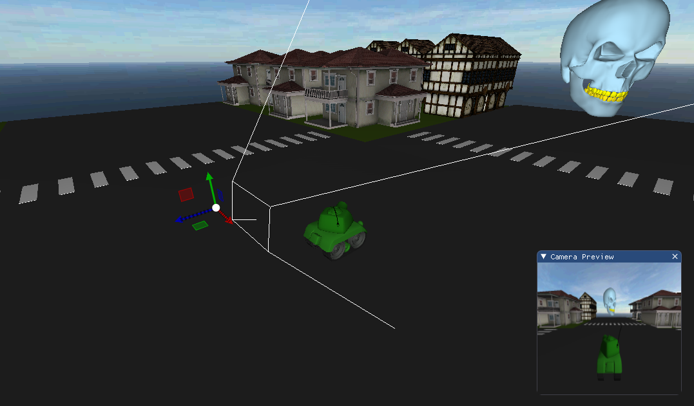
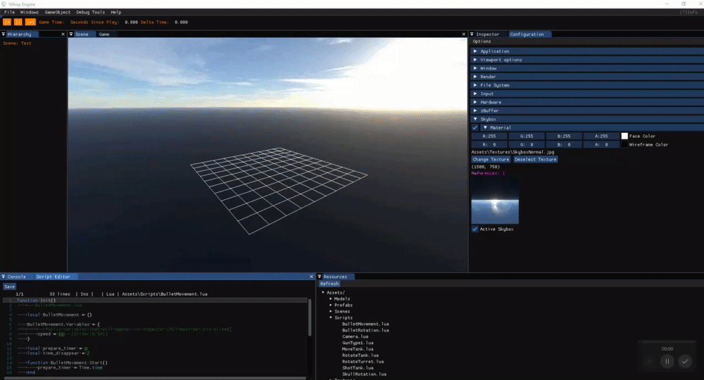
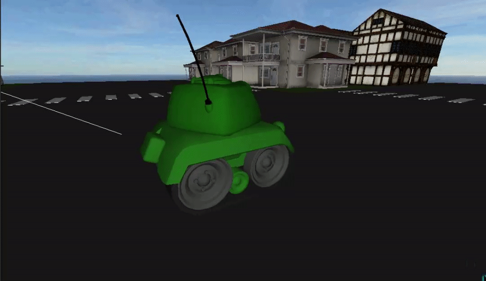
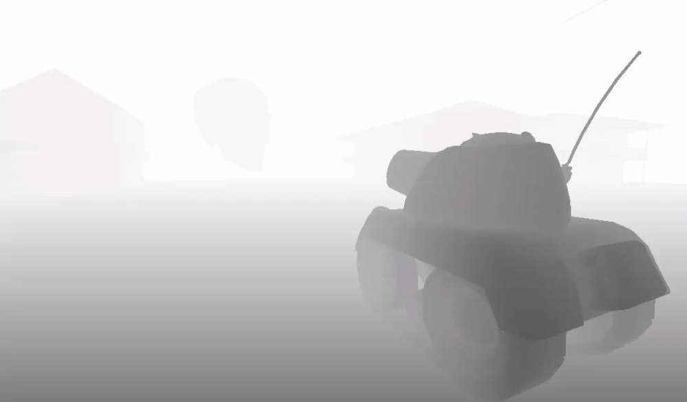
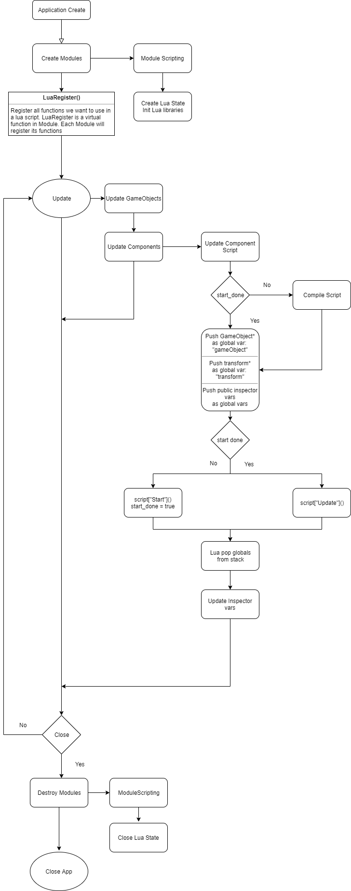
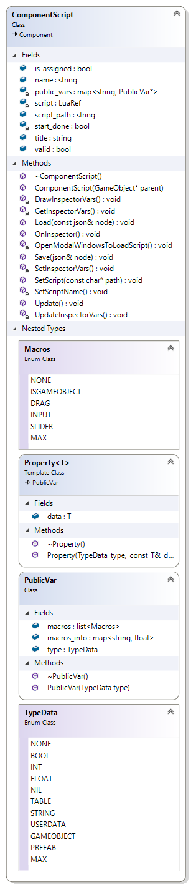
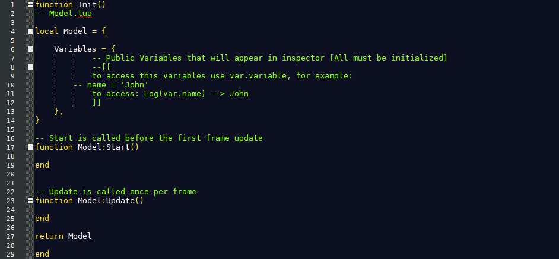
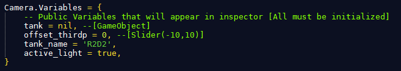
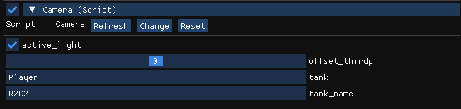

Whisp Engine
Empty Whisper
Smile and wave boys
Whisper Engine is a 3D video game engine. It has been developed in the subject of Game Engines in the third year of the university degree of videogames of CITM-UPC. The subject was to make an engine from scratch using OpenGL, and here is the result.
We hope you like it!
1rs Assigment
- Core Loop
- GameObject class
- Components
- Transformations
- GameObject Hierarchy
- FBX Importer
- Hierarchy Panel
- Console Panel
- ShortCuts System
- Integration JSON Parser
2nd Assigment
- Octree
- Components properties on inspector
- Octree
- Scene Serialization (Load and Save)
- Part of Bounding Boxes
- Own Format
- Resource manager
- Start/Pause/Stop and recover init state
3rd Assigment
- Scripting Structure
- integrate LuaBridge to structure
- Script Component
- Script class
- Prefabs
- Game Builds
- Integrate a Script Editor in Engine

1rs Assigment
- Camera Movement Controls
- About Panel
- Part of Configuration Panel
- Docking
- Outline selected GameObjects (parent and children)
- Wireframe Shapes
- Icon Logo
- DockSpace
- Brofiler added
2nd Assigment
- Frustum
- Camera Culling
- Camera Preview
- Help Marker
- ImGuizmo
- Viewport System
- Mouse Picking
3rd Assigment
- Scripting Tank game in Unity
- Some Tank scripts in Lua
- Autodestroy Objects Lua
- Bullet Prefab
- Tank Scene
- zBuffer
- Skybox editor
- Video Trailer
GameObjects
The GameObjects are the core of the engine and the future game. It is a container, an instance that stores different components. A GameObject by itself has nothing special, components, a name, a unique identifier, a reference to the father and a vector with references to the children, which provides the possibility of creating GameObjects hierarchies.
Components
The components are what give the GameObjects useful. Each component has a use and features that are displayed and can be edited in the GameObjects inspector. In WhispEngine we have a few.
The Transform component will always exist alongside the GameObject. It contains two transformation matrices, a global one with the position, rotation and scale with respect to the world and a local one with respect to the father's global matrix.
Mesh component contains the mesh to be rendered and is responsible for painting each frame, it also has the bounding boxes, the AABB and the OBB.
Material component is responsible for painting a texture in the mesh or, if it does not have any, of a specific color.
Camera component is used to paint the scene in the game, it has several values to modify such as the FOV, the aspect ratio or the distance of the near and far plane.
Component script is the one that is responsible for executing a lua script, saving its variables and displaying the public ones in the inspector so that they can be modified.
Prefabs
Prefabs are hierarchies of GameObjects with components that are saved to instantiate several or have some in the scene, change a value of a variable and the change is reflected in the other objects.
Hierarchy
A hierarchy is simply GameObjects' relationship with his father and his children. Each scene has an invisible parent object that is the root and that GameObject is the one that has as children the objects we see in the scene.
Scenes
The scene saves the hierarchy, next to the position and rotation of the viewport camera under a name.
Octree
Octree are a way to optimize, and Whisp Engine is not far behind when it comes to optimization. When a GameObject is set as static it is added to the octree, dividing it into 8 if it is positioned in an empty quadrant. The octree are a much faster way to check collisions, in our case with the mouse picking raycast or with the frustum.
Frustum
The frustum acts as a container space for the camera, from it you can vary the FOV, the maximum and minimum distance of rendering and finally its transformation. It is possible to create camera components for each object, which come embedded with a frustum and the previously mentioned functionalities.
Viewport
The Engine uses a viewports system to show both in the scene, in the game panel and in the preview game panel all the rendering. These viewports can be separated as single panels and moved and scaled across all screens of your computer.
Camera Culling
Camera culling can be activated inside the camera component, in the inspector and allows you to render only what is inside the frustum. It is a very good way of optimization.

Camera Preview
Camera preview is a feature that by clicking on a game object that contains a camera component, allows you to visualize what the frustum sees.
Docking
The docking allows you to attach panels to each other, this creates a very good organization between the panels of the engine and its a better way to work.
Mouse Picking
Mouse Picking allows you to select objects from the scene with the mouse. So, you don't have to go to the hierarchy to select, it uses raycast.
Outline Stencil Buffer
We have used the Stencil Buffer to create an orange outline in the selected objects, there is also the blue outline that is used for the child objects of the selected objects.
ZBuffer
ZBuffer allows, from a grey scale, to find out the distance of the pixels rendered on screen within the 3D environment. As darker pixel, more closer the viewport will be to it.
Skybox
The Skybox is simply a large sphere with the UVs reversed, which when you put a texture on it you will see from the inside. It can be customized in the configuration panel.

ShortCuts
ShortCuts system allows to put a concatenation of three keys and a pointer to a function. Every time you push the keys, the function will be called. We used them as call of panels active/deactive. It also has a panel to edit that shortcuts in order to set your own keys.
Play, Pause and One Frame
We want to separate the time creating the game and the time the game is playing. We have trhee buttons in order to do this task.

Play will start the game. Starting the game timer, compiling the scripts and creating a temporary save file of current scene. Pressing Play during game run, will stop the game, loading the scene that was before start.
Pause will pause all GameObjects, avoiding update scripts.
One Frame will reanude the game for one frame.
Library
Load Fbx from file is so slow, in order to speed up we create a file that contain the data we need from assets in our own file format because loading from own file format is a lot faster. On the other hand, if we have a mesh of a house and we instantiate it more than one time, the mesh will be loaded in memory more than one, but we don't want this, so, having a resource of that mess and the component mesh stores that resource will share the resource with other component meshes but only have loaded in memory one mesh
Here we have the simple flow diagram of scripting structure:
First we have to talk about the language we chose, Lua. Lua is a powerful, efficient, lightweight, embeddable scripting language. It supports procedural programming, object-oriented programming, functional programming, data-driven programming, and data description.
Lua is a good option also for the great integration in C. We have also integrate LuaBridge, a very good library to relate Lua with and C++ code of engine and vice versa.
Scripting Flow
First, we count with two main files: ModuleScripting and ComponentScript. We will talk
about the component script later. ModuleScripting is a Sub Class of Module that will have the Lua State in order
to use lua scripts in the engine. On the init of Engine will create an instance of Lua State and init all lua
libraries. After, Application
wil call a virtual function in Module called LuaRegister() in charge of register all functions and
fields that we want to use in scripts, for example the Module Input will Register its functions GetKey,
GetMouseButton...
After the init and start of all modules, starts the Update loop. ModuleScripting does not
have any instructions to do in the loop, all logic is in component script. The update of GameObjects do the
update of all its components. The main structure of Component Script is drawed in the diagram above. Once the
engine is in game mode, will check if is the first time the component do the first update, if not, the engine
will compile the script and saved a copy of the lua table in a LuaRef (we will talk later when we explain the
component). After compiling, or not if was already compiled, the script pushes global variables to the lua
state. This is made because you will want to access to the GameObject attached to component script but lua has
not know what GameObject is the object you are calling. Lua allows you to set global variables, so we push the
pointer of GameObject of the component and called it "gameObject", so now in script when we type "gameObject" we
will refering to the GameObject of the script. We made the same with transform and with public vars
in inspector.
Once all variables are pushed we see if we have to call Start or
Update. Is important to call the function from LuaRef because we can have more than one GameObject
with the same script and if we execute the script as normal the variables will we shared with all GameObject
that have the same script (in the script sctructure we will see why we do like that).
After execute the script it is the time to pop the global variables we pushed before in order that other scripts do not access to other GameObjects and other vars. We pushed from lua stack. Also we update the public variables because we send a copy of that variables.
This is the Update of component script. After finish the Update, engine will check if the user wants to exit, if he want, will destroy all modules. ModuleScripting will close Lua State. And finally close all application.
The component script will be the container that will compile and execute the script and save the public variables in order to print them in the inspector. Here we have the class diagram:
The most important in the component is the LuaRef var and the script_path. LuaRef is a structure of LuaBridge that keep the reference of any variable in a Lua script. To set some context, here we have the Model Script:
This is the script Model, when you create a script inside the engine, will copy that and
change the name class for the name you setted. As we can see, all is in a function that returns a local table.
Because you cannot get local variables in C++ from Lua we have a complete function that returns a local table.
With that we save some headaches with the shared scripts with some GameObjects. The main variable here is the
Model(or the name you setted to the script) that will act like a class in C++. Model is a table
that has three different variables. Variables is a table that will keep the public variables that
we want to see in the inspector in order to modify in the engine. We also have Start and
Update that we have explained before. The user can create new variables inside Model table. Every
time a component script compile a script, will execute the Init function and save in a LuaRef the table.
In order to have public vars that user can edit we have to consider some things specials in
lua. Firs of all, lua is dynamically typed so you can have a number and later assign a string, this will be
difficult to get in the inspector. Lua types are nil, boolean, number (only "float", int does not exist),
string, userdata, function, thread, and table. WhispEngine can hold in editor the next types: boolean, int,
float, string, GameObject and Prefab. to store that variables in editor we have to read from the raw script and
save in a container. The two classes above were made to store that data and print in the inspector.
PublicVar is the base class and Property class is the class to store data, inheriting from
PublicVar. We made that way because we want to save in the same vector different type of data. Each script
component will save a map of string and PublicVar. PublicVar also keeps the variable type and a list of macros
in order to edit the way variables show in the inspector. WhispEngine for the moment has four macros.
ISGAMEOBJECT is when you declare a GameObject to know that will be a GameObject. This can sound a little weird,
but it is necessary in lua because it is not like c# that you have GameObject variable_name; in lua
is like this: variable_name, and that could be a GameObject, a number, a string... and the same
with Prefabs. So in order to let the engine understand what will be you have to initialize all variables that
you want in the inspector. This are an example:
Script
In engine Inspector
GameObject vars are treated as GameObject pointers, to assign a GameObject to a public variable in the inspector just drag a Gameobject from the hierarchy to the variable in the inspector. The Engine will save all variables in the scene with the data you setted. If you want to instantiate a Gameobject from a script the better way is to create a prefab of that GameObject and create a public var in the script. To assign a Prefab just Drag from Resource panel the prefab you want to the variable prefab. Don't forget to set the macros, in the case of GameObjects is: variable_name = nil, --[GameObject]. And for Prefabs is: variable_name = nil, --[Prefab].
Introduction
Here you will find the functions and global variables that uses the scripting system in order to create your own scripts. WhispEngine has an autocomplete for ZeroBrane editor (see Configuration/ZeroBrane/README.md)
Public variables
All the variables you set in the table of Variables will be public in the inspector. to access later in the script you will have to add the prefix "var".
For example if you have speed = 5, later in code you will have to refer to it as var.speed to access the value in the inspector.
GameObject
GameObject is a class of C++ that you can use in lus scripts. All GameObjects you have in scripts will have that fields:
active:
Changes the active bool of GameObject.
gameObject.active = false --> deactive the GameObject
name:
Changes the name of GameObject.
gameObject.name = 'Tina' --> Sets the name of GameObject to 'Tina'
transform:
Gets the transform object of the GameObject.
GameObject
GameObject is also a namespace. You can use this functions from GameObject namespace
Instantiate:
Crates an instance of a Prefab. Sends a Prefab and return a GameObject pointer.
Destroy:
Destroys a GameObject. Sends a GameObject pointer.
SetColor:
Change the color of a GameObject. Send a GameObject pointer and three numbers from RGB.
gameObject
The word "gameObject" is reserved for the GameObject pointer of the GameObject attached to that script component.
Vector3
Vector3 is a class and a namespace. You can use this functions and fields
(Constructor):
To create a Vector3 you can send nothing or three numbers. vec = Vector3() or vec = Vector3(0,0,0).
x:
Gets x value.
y:
Gets y value.
z:
Gets z value.
Normalize:
Normalize the Vector3.
Normalized:
Returns the Vector3 normalized.
Magnitude:
Returns the magnitude.
sqrMagnitude:
Returns the magnitude sqrt.
toString:
Returns a string with the info of the Vector3.
FromEuler:
Creates a Quaternion from euler angles XYZ.
Quaternion
Quaternion is a class and a namespace. You can use this functions and fields
(Constructor):
To create a Quaternion you have to send x y z and w numbers. quat = Quaternion(x,y,z,w).
x:
Gets x value.
y:
Gets y value.
z:
Gets z value.
Normalize:
Normalize the Quaternion.
Normalized:
Returns the Quaternion normalized.
toString:
Returns a string with the info of the Quaternion.
ToEuler:
Creates a Vector3 from euler angles XYZ.
SetFromAxisAngle:
Set the Quaternion from an axis and an angle.
FromEuler:
Set the Quaternion from a Vector3 Euler Angles.
RotateAxisAngle:
Rotates the Quaternion from an axis and an angle.
RotateX:
Rotates the Quaternion in X axis the given the angle in radians.
RotateY:
Rotates the Quaternion in Y axis the given the angle in radians.
RotateZ:
Rotates the Quaternion in Z axis the given the angle in radians.
Random
Random is a namespace.
Range:
Gives a random int between the given 2 numbers.
Rangef:
Gives a random float between the given 2 numbers.
Log
Log is a function.
Logs in console the message you send.
Time
Time is a namespace.
deltaTime:
Returns the Delta Time.
time:
Returns the time in seconds since game starts.
transform
The word "transform" is reserved for the Transform pointer of the GameObject attached to that script component. All GameObjects you have in scripts will have that fields:
gameObject:
Is the GameObject of the own Transform.
parent:
The parent of the GameObject of the Transform.
position:
The Local position referenced to parent.
gposition:
The Global position.
rotation:
The Local Rotation.
grotation:
The Global Rotation.
forward:
Forward vector of the global rotation.
up:
Upper vector of the global rotation.
right:
Right vector of the global rotation.
scale:
Local Scale.
SetPositionv:
Function to set the position of the GameObject. The argument is a Vector3.
transform:SetPositionv(Vector3(1, 0, 0)) --> Set the position to position (1, 0, 0)
SetPosition3f:
Function to set the position of the GameObject. The argument are 3 numbers.
transform:SetPosition3f(1, 0, 0) --> Set the position to position (1, 0, 0)
transform
The word "transform" is reserved for the Transform pointer of the GameObject attached to that script component. All GameObjects you have in scripts will have that fields:
gameObject:
Is the GameObject of the own Transform.
parent:
The parent of the GameObject of the Transform.
position:
The Local position referenced to parent.
gposition:
The Global position.
rotation:
The Local Rotation.
grotation:
The Global Rotation.
forward:
Forward vector of the global rotation.
up:
Upper vector of the global rotation.
right:
Right vector of the global rotation.
scale:
Local Scale.
input
input is a namespace.
getKey:
Returns true while pressing that key.
getKeyDown:
Returns true on press that key.
getKeyUp:
Returns true on release that key.
getMouseDown:
Returns true on press that mouse button.
getMouse:
Returns true while that mouse button.
getMouseUp:
Returns true on release that mouse button.
getMouseX:
Returns the X coordenate of mouse on screen.
getMouseY:
Returns the Y coordenate of mouse on screen.
getMouseZ:
Returns the Z coordenate of mouse on screen.
Copyright © 2018 - All Rights Reserved - Empty Whisper
Template by OS Templates